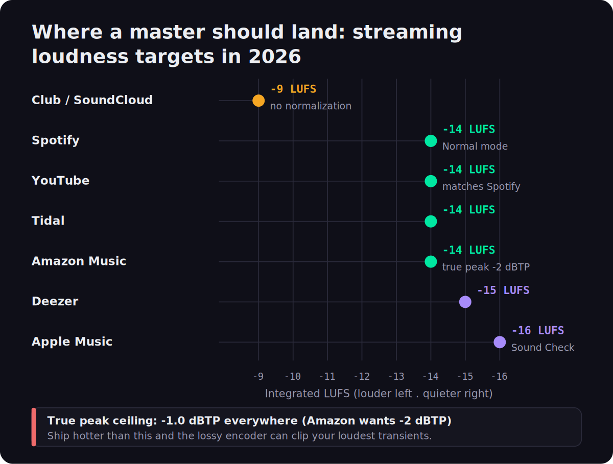
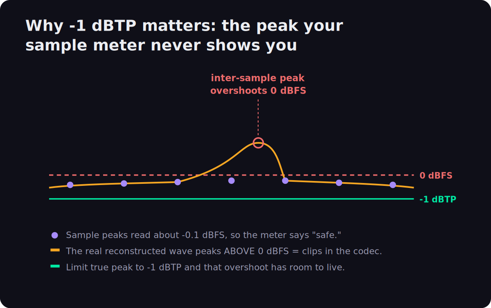
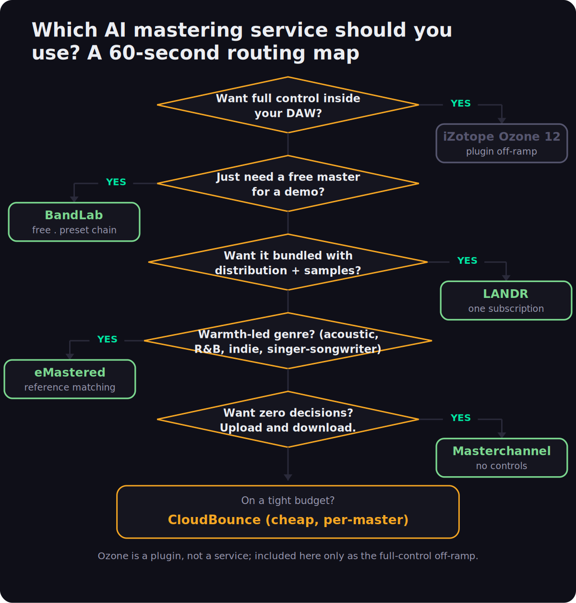

Every “best AI mastering” list on the first page of Google has the same quiet problem: the company writing it usually sells one of the services it ranks first. We don't. MusicProductionWiki doesn't own LANDR, eMastered, Masterchannel, or any cloud mastering tool — what we own is a real BS.1770 loudness engine, the one behind our Mix Fingerprint Analyzer. So instead of ranking on vibes, this guide ranks AI mastering services on the things that actually decide whether a master survives streaming: how each one handles integrated loudness, whether it respects the −1 dBTP true-peak ceiling, how well it matches a reference, and what it costs. Then it tells you which to pick for your genre — and when a service is the wrong tool entirely.
An AI mastering service is a specific thing: you upload a finished stereo mix, the engine analyzes it, and you download a louder, balanced, streaming-ready master a minute later. That's a different product from an in-DAW mastering plugin like iZotope Ozone, which gives you the controls and lives inside your session. This page is about the services — the upload-and-download tools someone with a finished mix and no mastering chain actually cross-shops. If you want the plugin side, that's a separate guide, and we'll point you there at the off-ramp.
The 60-Second Answer
If you don't want to read 5,000 words, here is the routing logic the rest of this article defends. There is no universal “best,” because these services optimize for genuinely different goals, and the right pick depends on your genre, your workflow, and whether you want decisions taken away from you or handed to you.
That “decisions taken away or handed to you” distinction is the real axis the category splits on. At one end, Masterchannel and BandLab give you essentially no controls — the simplicity is the entire value proposition. In the middle, eMastered and LANDR let you nudge intensity, EQ, and width. At the far end, a plugin hands you everything. There’s no correct position on that axis, only a correct one for you: a producer who freezes at choices is better served by the no-controls tools, while one who wants to learn is frustrated by them. Knowing which kind of person you are predicts your best service more reliably than any quality ranking.
Warmth-led genre (acoustic, R&B, soul, indie, singer-songwriter)? → eMastered — the most musical engine, gentlest on loudness, best reference matching.
Want mastering bundled with distribution + samples + plugins in one subscription? → LANDR — the all-in-one workhorse.
Want zero decisions — upload, wait, download? → Masterchannel.
Just need a free master for a demo? → BandLab — free, no watermark, commercial rights.
On a tight budget and mastering one or two tracks? → CloudBounce.
Want to hear and shape every move inside your DAW? → you don't want a service at all — you want a plugin.
Whatever you pick, do one thing before you call a master finished: run the output through a loudness and true-peak check so you actually know where it landed. You can do that free in our Mix Fingerprint Analyzer — it measures integrated LUFS, true peak, and tonal balance in the browser, and it's the honest second opinion none of these services give you about their own output. The rest of this guide is the reasoning behind the routing, the engineering that makes loudness and true peak the deciding factors, and the per-service detail.
How Each Service Handles Loudness
Here is the thing almost no AI mastering review tells you, because most reviewers can't measure it: a master is not “good” because it is loud. Every major streaming platform normalizes playback loudness, which means the loudness war is over and the services that still try to win it are quietly hurting your track. Understanding this is the whole game, so it's worth being precise about the numbers each service is aiming at — or ignoring.
Streaming platforms each pick a target integrated loudness and turn every track toward it on playback. Loudness normalization means a master that arrives much louder than the target gets turned down, and a quiet one gets turned up. The targets have converged over the last few years, but they aren't identical, and the gaps matter when you're deciding whether one master can serve everywhere.

The pattern is clear: Spotify, YouTube, Tidal, and Amazon Music all normalize to about −14 LUFS integrated; Deezer sits a touch quieter at −15; and Apple Music is the conservative outlier at −16 LUFS through its Sound Check system. Club playback and SoundCloud don't normalize at all, which is why dance and DJ-oriented masters are cut hotter, around −9 LUFS. Sitting underneath all of those is the true-peak ceiling — −1.0 dBTP almost everywhere, and a stricter −2 dBTP for Amazon Music, whose Alexa and Echo playback chain is more prone to inter-sample clipping. (These are published platform reference values, not an MPW measurement; we'll get to why they're stable engineering facts in the engineering section.)
So the question to ask of any AI mastering service is not “how loud does it make my track,” but “does it target a sensible loudness for streaming and does it hold a safe true-peak ceiling.” This is where the services genuinely differ in character. LANDR is the most aggressive of the popular services on loudness — its masters tend to come out hot and confident, which flatters a quick A/B in the browser but can mean the platform turns the track down and you've traded dynamics for nothing. eMastered is the opposite: it is noticeably more restrained, generally landing in a more dynamic place that survives normalization better and keeps transients intact, which is exactly why it suits acoustic and vocal-forward material. Masterchannel leans loud and modern with no user control to pull it back. BandLab's presets vary — the “Fire” preset is hot, “Clarity” gentler — but none adapt to your specific mix. The honest move with any of them is to verify, not trust: master the track, then measure the output's integrated loudness and true peak yourself before you decide it's done.
This raises the question every mastering forum re-litigates: do you need a separate master for each platform? For almost everyone, no. Because the targets have converged so tightly around −14 LUFS, one master judged for streaming — landing somewhere in the −9 to −14 LUFS range depending on genre, with true peak at −1 dBTP — lands on the right side of every platform’s normalization. The only real exception is a club or DJ cut, where the absence of normalization rewards a hotter master, and where you might cut a louder version specifically for that context. Chasing a bespoke master for Spotify versus Apple versus Tidal is effort spent on a difference of a decibel or two that normalization erases anyway.
One nuance worth holding onto: Apple Music’s Sound Check normalization is optional and off for some listeners, which means your master has to sound right both when it’s normalized to −16 LUFS and when it plays at its native loudness with no adjustment at all. That dual requirement is another argument against crushing a master for loudness — an over-limited track that was tuned to “win” a normalized comparison sounds fatiguing and small at full level. A master that keeps its dynamics holds up in both states, which is the practical reason the restrained services tend to age better than the loud ones across a whole catalog.
Louder is not better on streaming. A service that ships your master at −7 LUFS and −0.2 dBTP isn't winning — it's getting turned down on playback and risking codec clipping. Target a sensible loudness, hold −1 dBTP, and let normalization do the rest.
The Services, One by One
Five services cover what almost everyone actually cross-shops. For each, the price is verified against the vendor's current page as of June 2026; the sound and behavior notes are sourced from the vendors plus recent independent reviews. Prices move, so treat the numbers as “as of now” and re-check before you subscribe.
One thing the order below is not: a strict quality ranking. eMastered leads because it’s the safest default for the widest range of music, but a hip-hop producer who values speed and a hot, modern sound might genuinely rank Masterchannel first, and a prolific releaser might get more total value from LANDR’s bundle than from a better-sounding engine. Read each entry for its character and its best-fit profile, not for its position. The whole point of this guide is that “best” is a function of what you’re making and how you work, not a single throne.
eMastered — the musical one
eMastered is our default recommendation for most independent music, and the reason is restraint. Its processing respects the mix instead of bulldozing it for loudness, which is the single most common way AI masters go wrong. The reference-matching feature is the standout: if you have a commercially mastered track whose tonal balance and loudness you admire, feeding it in gives the engine a target far more specific than a genre preset. For warmth-dependent genres — where an over-compressed, over-bright master is fatal — it is the most consistently musical service here. If you want to go deeper on the LANDR-versus-everything-else question, our LANDR vs iZotope Ozone piece One practical note on getting the most from it: reference matching only helps if the reference is genuinely comparable — feed it a commercially mastered track in the same genre, at a similar arrangement density, rather than a wall-of-sound pop master when you’re mastering a sparse acoustic ballad. Matched well, it gives the engine a tonal and loudness target far more specific than any genre preset, and it is the single feature that most reliably lifts an AI master from “acceptable” to “I’d release this.”
LANDR — the all-in-one workhorse
LANDR earns its place on subscription math, not on sound. If you release constantly and would otherwise pay separately for distribution, a sample library, and plugins, folding mastering into one bill is genuinely efficient — the mastering quality is solid and streaming-ready even if it isn't the warmest. Where it gets you is the small print: the 15% royalty retention on bundled distribution after cancellation is the kind of long-term cost that doesn't show up in a price comparison but matters as you earn more. As a pure mastering engine it's fine; as an ecosystem it's the strongest value here, provided you'll actually use the rest of it.
Masterchannel — the no-decisions one
Masterchannel is the answer to a specific feeling: “I just want this mastered and I don't want to think about it.” It removes every friction point, which is a real value if decision fatigue is what's stopping you from finishing tracks. The trade is total: you can't fix a result you don't like, so it lives or dies on whether its house sound suits your material. For fast turnaround on electronic or hip-hop demos it's excellent; for a flagship release where you'd want to nudge the balance, the lack of controls becomes the limitation.
BandLab Mastering — the genuinely free one
The remarkable thing about BandLab Mastering is that it is actually free in the way nothing else here is: WAV output, no watermark, and full commercial rights, where most “free” mastering tools are preview funnels that paywall the download. That makes it the perfect first step. Master a demo, listen to what a master does to your mix, and then measure it — running BandLab's output through the Mix Fingerprint Analyzer is a free way to see exactly how its preset chain set your loudness and true peak. When a real release is on the line, step up to an adaptive engine or a plugin; for everything before that, free is the right price.
If you do lean on BandLab, the preset choice matters more than it looks. “Universal” is the neutral, safe default and the one to reach for first. “Fire” is the loud, aggressive option — tempting in a quick listen, but it’s exactly the kind of hot master that gets turned down by normalization, so use it sparingly. “Clarity” leans brighter and more open, which can flatter a dull mix or over-sharpen an already-bright one. “Tape” adds a gentle saturation character. Because none of them adapt to your specific track, the right move is to try two or three, measure each, and keep the one that lands closest to your loudness target while keeping the mix’s character — which, again, you can only really judge by measuring rather than by which sounds biggest in the browser.
CloudBounce — the budget pick
CloudBounce is the honest budget answer: when you need a master cheaply and quickly and you're not chasing the last 10% of quality, the per-credit pricing beats committing to a subscription. It's the right call for a quick turnaround on a track that doesn't justify a paid tool, and the wrong one for the single you're building a campaign around.
The Comparison Table
The same field, side by side, on the factors that actually separate them. The columns to read first are the loudness behavior and per-platform targeting, because those are what decide whether a master survives streaming; price and control level decide whether the service fits your workflow. iZotope Ozone is included on the last row only as the “if you want a plugin instead” reference — it's a plugin, not a service, and belongs in a different category.
Read across a single row and the personality of each service shows up immediately. eMastered is the only one pairing strong reference matching with restrained loudness, which is why it’s the safe default for music with character to protect. LANDR trades a generic sound for unbeatable bundle value. Masterchannel trades all control for speed. BandLab trades adaptivity for being genuinely free. CloudBounce trades the quality ceiling for the lowest per-track cost. And Ozone trades simplicity for total control. No row is strictly better than another; each is a different answer to “what are you willing to give up.”
| Service | Price model | Control | Reference match | Loudness behavior | Best for |
|---|---|---|---|---|---|
| eMastered | ~$19–39/mo | Moderate | ✔ strong | Restrained, dynamic | Warmth-led genres |
| LANDR | ~$10/track or ~$8–17/mo bundle | Presets | ✖ | Aggressive, hot | All-in-one releasers |
| Masterchannel | ~$15–25/mo | None | ✖ | Loud, modern | Zero-decisions speed |
| BandLab | Free | Presets | ✖ | Preset-dependent | Demos, testing |
| CloudBounce | ~$4/master or ~$10–15/mo | Basic | ✖ | Standard | Cheap quick masters |
| iZotope Ozone 12 (plugin) | $55 / $219 / $499 perpetual | ✔ full | ✔ (Tonal Balance) | You decide | Full DAW control |
Prices and behaviors verified against vendor pages and recent reviews, June 19, 2026. Reference-match and control columns reflect the standard workflow; paid add-ons can change them. Sound quality is subjective — the loudness behavior column is the sourced tendency, not a single measured number.
The Numbers That Decide a Master
Everything above rests on three engineering facts that don't change with vendor pricing, so they're worth understanding from first principles. Once you have them, you can evaluate any AI mastering service yourself instead of trusting its marketing — and you'll understand why we keep saying “measure the output.”
One: integrated LUFS is the loudness that matters, and the platforms enforce it. LUFS — Loudness Units Full Scale — measures perceived loudness averaged over the whole track, weighted to match human hearing, which is why it predicts how loud a song actually feels far better than a peak meter does. Spotify measures your track's integrated LUFS at upload, stores the offset, and applies it on playback so every song in a playlist sits at roughly the same loudness. The file on the server is untouched; the volume the listener hears is adjusted. The consequence is the one most producers still get wrong: mastering louder than the platform target buys you nothing on playback and costs you dynamic range. A track crushed to −6 LUFS and a track mastered to −12 LUFS arrive at the listener at the same loudness — but the −12 master kept its transients, so it sounds bigger, punchier, and more open. That's the whole reason the loudness war ended.
Two: the true-peak ceiling is −1 dBTP, and it's not the same as your sample peak. This is the single most common reason a master that “looked fine” distorts after upload, so it's worth seeing clearly.

A standard peak meter shows the value at each digital sample. But the continuous analog waveform reconstructed on playback rises and falls between those samples, and it can peak higher than any individual sample — an inter-sample, or true, peak. On top of that, the lossy codecs streaming platforms use (Spotify's Ogg Vorbis, Apple's AAC) add a little more on encoding. So a master that reads −0.1 dBFS on a sample meter can exceed 0 dBFS as a true peak and clip audibly after you upload it. The fix is simple and non-negotiable: limit true peak to −1.0 dBTP (and −2 dBTP if you distribute to Amazon Music). A good true-peak limiter does this without you hearing it. The reason this matters for choosing a service is that not all of them are disciplined about it — some ship masters at −0.3 dBFS that clip in the encoder — and our true peak entry goes deeper on the measurement. The only way to know where a given service left your true peak is to measure the output, which our analyzer does directly.
The mechanism is worth picturing once so it stops being mysterious. Digital audio stores a series of discrete sample values; to play them, a converter reconstructs the smooth continuous waveform that passes through those points. Between any two samples, that reconstructed curve can swing higher than either neighbor — mathematically, the true peak is the maximum of the reconstructed signal, not the maximum of the stored samples. A signal that just touches −0.1 dBFS at its sample points can reconstruct to a true peak above 0 dBFS, and once it exceeds 0 dBFS there’s no headroom left, so it clips. Lossy encoding makes it slightly worse by nudging peaks during compression. This is why every serious loudness meter has a separate true-peak (dBTP) reading distinct from the sample-peak number, and why “my master never went over 0 on the meter” is not the same as “my master is safe.”
Three: because normalization handles level, the real mastering decisions are dynamics and balance, not loudness. Once you accept that the platform will set the playback level, the job of a master changes. It's no longer “make it loud” — it's “make it loud enough to be competitive while keeping the dynamics that make it feel alive, and fix the tonal balance so it translates across speakers.” That reframing is why eMastered's restraint is a feature and not a weakness, and why a service that only changes final gain isn't really mastering. It's also why a master limiter pushed too hard is the enemy: every decibel of transient you crush for loudness is a decibel normalization will quietly hand back as a volume reduction, leaving you with less life and the same playback level. If you want to do this work yourself rather than hand it to a service, our guide to mastering for streaming and how to master a song walk through the order of operations, and the free LUFS target reference keeps the per-platform numbers in front of you.
How to Choose
Put the engineering and the per-service notes together and the decision is less about “which is best” and more about answering a short series of questions in order. Genre and workflow do most of the work; the rest is budget and how much control you want.

Start with control: if you genuinely want to hear and shape every move, no service will satisfy you and you should skip to the off-ramp below. If you're happy with upload-and-download, the next question is genre. Warmth-dependent material — acoustic, R&B, soul, indie, singer-songwriter — routes to eMastered, whose restraint and reference matching protect the character that defines those styles. If you release constantly and want one subscription covering mastering, distribution, samples, and plugins, LANDR is the efficient bundle. If decisions are what stop you finishing, Masterchannel's no-controls speed is the unlock. If you just need a free master for a demo, BandLab. And if the constraint is purely budget on a one-off, CloudBounce. The branches aren't mutually exclusive — plenty of producers keep BandLab for demos and a paid service for releases — but the map gets you to a sensible default in under a minute.
If you’re still torn between two services, let cost and commitment break the tie. The free and per-track options (BandLab, CloudBounce, LANDR’s per-track) carry no commitment, so they’re the low-risk way to test whether a service’s sound suits your material before you subscribe to anything. Every paid service worth considering also offers a free preview, so there is no reason to commit blind: master the same track on your two finalists, measure both, listen at matched loudness, and let your ears on your own music settle it. The leaderboard in any article — including this one — is a starting point, not a substitute for hearing your track through the engine.
Service or Plugin? The Off-Ramp
A surprising number of people searching for “best AI mastering” actually want a plugin and don't know it yet, so it's worth drawing the line clearly. A service is a black box: you give it a finished stereo file and it gives you back a master, fast, with little or no control. A plugin lives in your DAW, processes your mix in context, and exposes every decision — you can hear what the AI suggested and then override it. The two solve different problems.
The leading in-DAW option is iZotope Ozone 12, which is a plugin, not a service — it sells as Elements ($55), Standard ($219), and Advanced ($499) perpetual licenses rather than a monthly upload tool, with seasonal sales dropping Standard toward $199. Its Master Assistant gives you an AI starting point the way a service does, but then hands you a full mastering chain plus Tonal Balance Control to shape it. Choose a plugin when you want to learn mastering, iterate without re-uploading, master in context with your mix, or keep working offline. Choose a service when you want speed, simplicity, and a result without a learning curve. If the plugin path is where you're heading, our best AI mixing and mastering plugins guide covers Ozone, sonible, and the rest, and best plugins for mastering covers the full chain. Many producers do both: a free service master as a sanity check against their own plugin chain is a cheap, useful second opinion.
There’s a deeper reason the plugin path appeals to anyone who wants to improve: a service hides the decisions, so you never learn from them, while a plugin shows its work. When Ozone’s Master Assistant proposes a chain, you can see the EQ moves it made, the amount of limiting it applied, and the target it aimed at — and you can disagree. Over a few dozen masters that visibility turns into actual mastering skill, which compounds in a way that uploading to a black box never does. If your goal is just to ship competent masters with no interest in the craft, a service is the rational choice. If you want to get better, the plugin is the better investment even though the learning curve is real.
Mastering AI-Generated Tracks
If you're making music with Suno, Udio, or similar tools, AI mastering is a natural next step — and there are two specific traps worth flagging. Technically, a service treats a generated export like any other stereo file and will set its loudness and true peak just the same. But generated tracks frequently arrive already loud and heavily limited, which means a service that pushes loudness even further can compound the damage rather than help. A gentler engine like eMastered, plus an actual true-peak check, is the safer route. The second trap is unrelated to sound: mastering an AI track does nothing about the disclosure and eligibility rules that distributors and platforms apply to AI-generated music — that's a distribution question, not a mastering one, and a polished master doesn't make a track eligible everywhere. The practical advice is the same as for any source: master gently, then measure the output's loudness and true peak before you release, because a generated track that was already squashed is exactly the kind of file that clips after upload.
Concretely, the failure mode looks like this: a generated track arrives already squashed to something like −7 LUFS with its transients flattened, you run it through a loud-leaning service that adds another stage of limiting, and the result is a fatiguing, distorted master that the platform then turns down anyway — you’ve degraded the audio for a loudness the listener never hears. The fix is to treat generated material as if it were already over-mastered: prefer a gentle engine, avoid stacking another aggressive limiter on top, and measure the output’s true peak specifically, because pre-squashed material is the most likely to be hiding inter-sample peaks. If the generated file is already near your loudness target with no headroom, sometimes the right move is barely mastering it at all.
That “measure before you release” habit is the through-line of this entire guide. None of these services tell you honestly where they left your loudness and true peak — they just hand you a file that sounds louder in the browser. The only way to actually know whether a master is streaming-safe is to measure it, which is the whole reason our Mix Fingerprint Analyzer exists: upload the master, read the integrated LUFS, true peak, and tonal balance, and decide with numbers instead of vibes. It's free, the audio never leaves your browser, and it's the one neutral check in a category full of services grading their own homework.
So here is the guide in one breath. Pick the service that matches your music and your tolerance for decisions — eMastered for character, LANDR for the bundle, Masterchannel for speed, BandLab for free, CloudBounce for cheap, a plugin if you want control. Master gently rather than loudly, because the platforms normalize and louder only costs you dynamics. Hold true peak at −1 dBTP so nothing clips after upload. Then measure the result instead of trusting it, because that’s the one step that turns “a service made it louder” into “I know this master is streaming-safe.” Do those four things and any of these services will serve you well; skip the measuring step and even the best of them can quietly hand you a master that clips.
What AI Mastering Still Can’t Do
It would be dishonest to rank these services without being clear about where the whole category stops, because the gap is real and knowing it tells you when to reach for a human instead. AI mastering is genuinely good at the routine, measurable work that dominates a streaming master: setting integrated loudness, holding a safe true-peak ceiling, and smoothing obvious broad-strokes tonal imbalance. On a clean, well-balanced mix, a good service gets you 90% of the way to a competitive master in a minute, and for most independent releases that 90% is enough.
What it can’t do is the judgment work. It can’t tell you that the reason your master sounds wrong is that the mix is wrong — that the vocal is buried, the low end is masking the kick, or the stereo image collapses in mono. An AI mastering engine takes the stereo file as a given and works within it; it will dutifully master a flawed mix into a louder flawed mix. A human engineer hears the underlying problem and tells you to go back and fix it, which is often the most valuable thing mastering feedback provides. If your masters keep coming out disappointing, the answer is usually upstream, and our guide to mastering a song and the analyzer’s tonal-balance read both help you find the mix problem the service can’t.
The category also struggles with cohesion and character. Across an album, a human engineer makes track three sit consistently with tracks two and four — matched loudness, matched tone, a deliberate sequence — in a way that mastering each track independently through a service does not guarantee. And on material where the character of the recording is the entire point (a deliberately lo-fi production, an unconventional dynamic shape, a genre with its own loudness conventions), an engine optimizing toward convention can sand off exactly what made the track distinctive. None of this means AI mastering is bad; it means it’s a tool with a clear job. A pragmatic workflow that a lot of working producers use: AI-master everything to get fast, cheap, competent results, and reserve a human engineer for the flagship single or the cohesive album where judgment and character earn their fee.
It’s also worth being realistic about where the technology is heading. The 2026 services are markedly better than they were even two years ago — reference matching, stem-aware processing, and genre detection have all sharpened — and the routine work they automate keeps expanding. But the judgment gap isn’t a quality-of-algorithm problem that a bigger model closes next year; it’s a difference in what the tool is being asked to do. A service masters the file you give it. An engineer decides whether that file should exist in its current form. That distinction is likely to hold even as the engines keep improving, which is the calm, non-hype way to think about “will AI replace mastering engineers”: it already replaced the routine tier, and it’s unlikely to replace the judgment tier soon.
Try It Yourself: 3 Checks
Reading about loudness and true peak is one thing; seeing it in your own tracks is what makes it stick. These three checks take a finished mix from “mastered by a service” to “mastered and verified,” and they cost nothing.
- Take a finished mix and master it on a free tier — BandLab is the easiest, with a real WAV download and no watermark.
- Pick the “Universal” preset first; it's the most neutral starting point.
- Run the mastered WAV through the Mix Fingerprint Analyzer and read the integrated LUFS and true peak. Note where the free master landed — that's your baseline for comparing anything paid.
- Take the same mix and master it through two different services — for example BandLab (free) and an eMastered or LANDR free preview.
- Measure both outputs in the analyzer and compare integrated LUFS, true peak, and tonal balance side by side.
- Listen at matched loudness (turn the louder one down until they're level) and decide which you prefer with your ears, not the volume. You'll usually find the “better” one in a blind browser test was just louder.
- Decide your target from the loudness chart above: −14 LUFS / −1 dBTP for a streaming single, or a hotter target if it's club-bound.
- Choose a reference track whose master you admire, and if your service supports reference matching (eMastered), feed it in.
- Master, measure, and judge each service by how close its output sits to your target loudness and true-peak ceiling — not by which sounds loudest. The winner is the one that lands on the numbers and keeps the dynamics, which you can confirm against the LUFS and true-peak references.
Frequently Asked Questions
There is no single winner, because the services optimize for different things. For warmth-led genres like acoustic, R&B, indie and singer-songwriter, eMastered is the most musical and the least aggressive on loudness. If you want mastering bundled into one subscription with distribution and samples, LANDR is the obvious pick. For the fastest upload-and-download with zero decisions, Masterchannel. For a free demo master, BandLab. And if you want full control inside your DAW rather than a cloud service, a plugin like iZotope Ozone is the better tool. Match the service to the job, not to a leaderboard.
For most independent releases on streaming, yes. The level-setting work that dominates a streaming master (hitting the right integrated loudness, holding a safe true-peak ceiling, smoothing obvious tonal imbalance) is exactly what these engines do consistently. Where a human mastering engineer still pulls ahead is on material with unusual dynamics, problem mixes that need surgical correction, cohesive album-level decisions, and anything where the character of the recording is the point. A practical workflow many producers use: AI-master to get 90% there for free or cheap, and reserve a human engineer for the flagship single.
They have different personalities. LANDR is genre-aware and consistent but can sound a little clinical or generic, and it tends to push loudness harder. eMastered, co-founded by Grammy-winning engineer Joe Chiccarelli, is generally gentler on loudness and more tasteful with tonal balance, with stronger reference-track matching. On warmth-dependent material eMastered usually wins; for high-volume, release-everything workflows where the bundled distribution matters, LANDR's all-in-one value often wins. For the deep LANDR-versus-plugin question, see our LANDR vs iZotope Ozone breakdown.
Spotify normalizes playback to roughly -14 LUFS integrated in its default Normal mode, so a master sitting near -14 LUFS plays back with little or no gain change. But louder is not better: anything hotter than -14 gets turned down on playback, and you only lose dynamic range for the trouble. Most modern engineers master for the loudness that lets the mix breathe (often -9 to -12 LUFS for dense pop and electronic) and let normalization handle the level, while keeping true peak at -1 dBTP. Our LUFS explainer and the free LUFS target reference tool walk through the per-platform numbers.
Almost always inter-sample (true) peaks. A standard sample peak meter reads the value at each digital sample, but the continuous waveform reconstructed on playback can rise higher between samples, and lossy codecs (Spotify's Ogg, Apple's AAC) add a little more on encoding. A master that reads -0.1 dBFS on a sample meter can therefore exceed 0 dBFS as a true peak and distort after upload. The fix is to limit true peak to -1.0 dBTP (-2 dBTP for Amazon), which most mastering services and limiters can do. See our true peak and true-peak limiting entries for the mechanism.
For demos, reference versions, and getting a feel for how a master changes your mix, BandLab's free mastering is genuinely useful: it outputs WAV and MP3 with no watermark and full commercial rights, which is rare in a free tier. The limitation is that it runs a fixed preset chain rather than analyzing your track the way the paid services do, so it won't match a dedicated tool on a tricky mix. Use it to test the idea; step up to a paid service or a plugin when a release is on the line.
A service is a black box you upload a finished stereo mix to and download a master from; a plugin lives in your DAW and gives you the controls. Choose a service when you want speed, simplicity, and a result without learning mastering. Choose a plugin (iZotope Ozone, sonible, FabFilter chains) when you want to hear and shape every move, master in context with your mix, or iterate without re-uploading. Many producers run a free service master as a sanity check against their own plugin chain. Our best AI mixing plugins guide covers the in-DAW side.
Yes, technically: an AI mastering service treats a Suno or Udio export like any other stereo file and will set its loudness and true peak. Two cautions. First, generated tracks often arrive already loud and over-limited, so a service that pushes loudness further can make them worse, not better; a gentler engine and a real true-peak check help. Second, distribution and platform AI-disclosure rules are a separate question from mastering — mastering an AI track does not make it eligible everywhere. Run the output through a loudness and true-peak check before release.